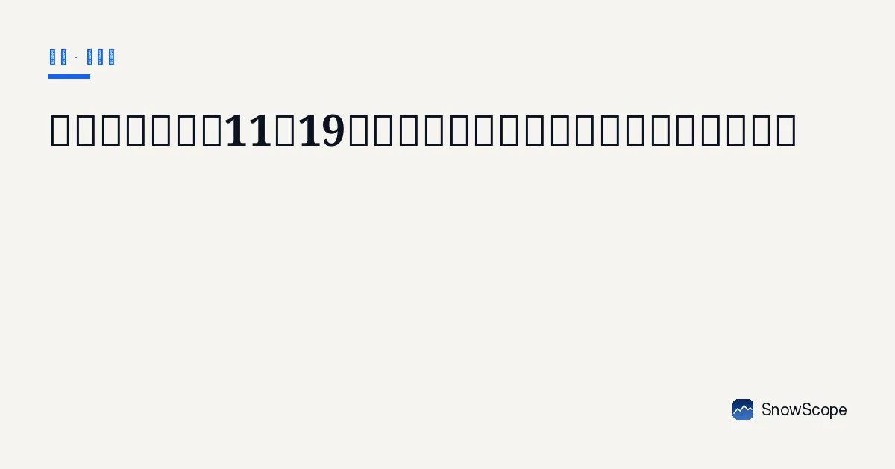
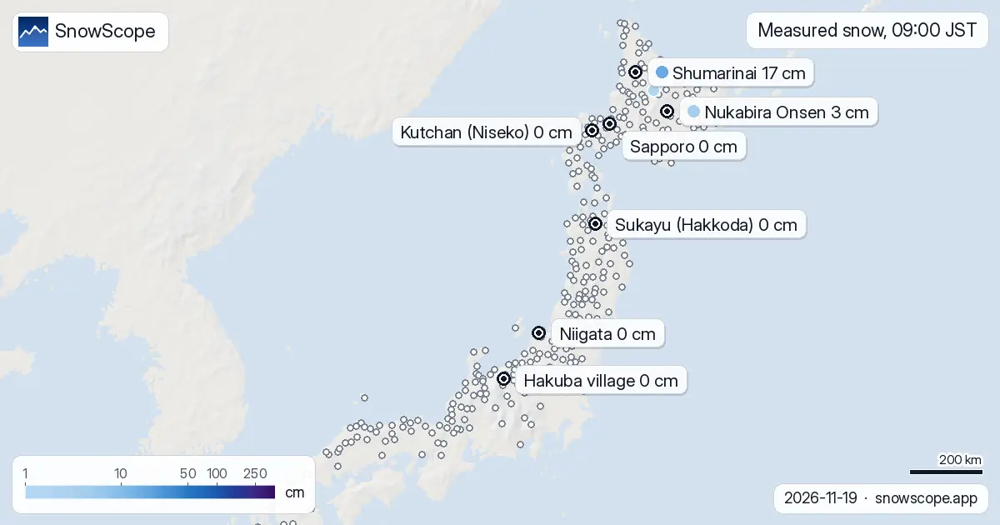

日本の雪情報（11月19日）：町は雪なし、山には今季初の大雪
今朝、札幌や新潟、白馬村の窓から外を見ても、雪はまったくありませんでした。2026年11月19日9時（日本時間）の時点で、積雪を観測している全国318地点の気象観測所のうち、地面に雪があったのはわずか3地点です。1週間前の11月12日には28地点に雪がありました。今季最初の寒波は平地ではすでに過ぎ去りましたが、山ではいよいよ本格的なスキーシーズンが始まろうとしています。
SnowScope アプリで日本の降雪予報をチェック積雪深、アラート、3Dマップを無料で。
今朝、雪があるところ
雪が残っている3地点は、いずれも北海道の内陸部です。旭川の北、寒さの厳しい内陸にある標高255 mの朱鞠内では、まだ17 cmの積雪がありました。大雪山系にある標高540 mの温泉地ぬかびら源泉郷では3 cm。これはすべて新雪で、観測までの24時間に5 cmが降り、夜のうちに少し締まりました。大雪山のふもと、標高324 mの上川は1 cmだけでした。
そのほかの観測所はすべて積雪ゼロでした。標高17 mの札幌、120 mの旭川、海沿いの青森と新潟、そして北アルプスのふもと、標高703 mの白馬村も同じです。これらの観測所は町や谷にあるため、わかるのは足もとの雪であって、リフト山頂の雪ではありません。それでも、地上に本当の冬が来た場所を知るには最もわかりやすい手がかりです。

この1週間で解けた雪
1週間前の様子はまったく違いました。11月12日には、朱鞠内で48 cm、ニセコのふもとの町・倶知安で31 cm、美深で24 cm、八甲田山中の標高890 mにある酸ケ湯で23 cmの積雪がありました。幌加内は20 cm、喜茂別は15 cmでした。
その後、暖かい空気と雨でほとんどが解けました。倶知安と酸ケ湯は31 cmと23 cmからゼロになり、朱鞠内も雪の3分の2近くを失いました。これは日本の11月としては珍しくありません。初雪は早めに降っても、冬の季節風が落ち着くまでは平地や谷でいったん解けることがよくあります。11月中旬に雪が解けても、これからのシーズンについてはほとんど何もわかりません。
次の雪はまず北アルプスへ
天気はいま変わりつつあります。各スキー場の山頂リフトについての、気象モデルのアンサンブルによる予報では、今季最初の大雪は北アルプスにやってきます。標高 1,827 m の白馬八方尾根の山頂では、11月19日だけで新雪は中央値で約50 cm、さらに11月20日から25日にかけて約97 cm、多い予報では149 cm近くになっています。
ただし、谷では最初はあまり積もりません。白馬の標高751 mのふもとでは、同じ予報で今日は約32 mm、11月20日は約26 mmの雨となり、21日から寒気が入って雪の高さが下がってきます。北海道の来週はやや少なめで、11月20日から25日の中央値はキロロ山頂で約61 cm、ニセコで約35 cm、富良野で約20 cmです。東北の蔵王温泉は山頂で約63 cmですが、16 cmから66 cmと予報の幅が大きくなっています。
旅行を計画しているなら
11月下旬は、日本でスキー旅行を確実に楽しむにはまだ早い時期です。最初の雪で一部の標高の高いスキー場がオープンしますが、多くのスキー場は12月上旬から中旬のオープンで、日本で有名な深く軽いパウダーは、シベリアからの寒気が毎日のように日本海を渡ってくる12月下旬から2月にかけてが本番です。
来週いちばん期待できるのは、雪雲がぶつかる本州の日本海側の標高の高いエリアです。白馬と栂池に注目で、最初のまとまった雪は標高の高いリフトから届きます。すでに日本にいる場合も、町の雪は目安になりません。今週は、白馬村の道路に雪がなくても、標高1,800 mでは50 cmの新雪ということが同じ日に起こりえます。
毎日の雪をチェックするには
SnowScope は現在、北海道から日本アルプスまで日本全国を毎日カバーし、525のスキー場の積雪深、新雪、予報を提供しています。マップを開けば毎朝の雪の高さがわかり、お気に入りのスキー場を登録すれば大雪が近づいたときにお知らせが届きます。
スキーヤーへのヒント
- 谷の観測所は町の雪を示すもので、ゲレンデの雪ではありません。出かける前に山頂リフトの予報を確認しましょう。
- 11月19日と20日の白馬は、ふもとで雨、山頂で雪になる見込みです。
- 日本の多くのスキー場は12月上旬から中旬にオープンします。各スキー場のオープン日を確認してください。
その他の地図（外部サイト）
参考文献とクレジット
- Japan Meteorological Agency, AMeDAS snow depth observations www.jma.go.jp/bosai/map.html#contents=amedas&elem=snow
この数字について
今日の積雪深：2026年11月19日9時（日本時間）に日本の公式気象観測所で測られた値です。観測所は主に町や谷にあり、それぞれの観測場所の雪を測っています。これからの雪：各スキー場の山頂リフト付近についての気象モデルのアンサンブル予報で、最小・中央・最大の値を示しています。
Cite this report
For research, teaching or the press: the numbers and charts are free to reuse under CC BY 4.0 with this citation.
SnowScope (2026), 日本の雪情報（11月19日）：町は雪なし、山には今季初の大雪, https://snowscope.app/blog/ja/2026/11/snow-in-japan-today-19-november-2026.html, accessed 2026-11-19
SnowScope (Atlas Labs). (2026, November 19). 日本の雪情報（11月19日）：町は雪なし、山には今季初の大雪. SnowScope snow reports. https://snowscope.app/blog/ja/2026/11/snow-in-japan-today-19-november-2026.html
BibTeX
@misc{snowscope2026snowinjapantoday19novemb,
author = {{SnowScope (Atlas Labs)}},
title = {日本の雪情報（11月19日）：町は雪なし、山には今季初の大雪},
year = {2026},
month = nov,
howpublished = {\url{https://snowscope.app/blog/ja/2026/11/snow-in-japan-today-19-november-2026.html}},
note = {Published 2026-11-19 11:19 UTC; accessed 2026-11-19}
}· CC BY 4.0 · Methods, data and tools →
日本をフォロー
無料：新雪が来るとお知らせ、毎朝の予報も届きます。